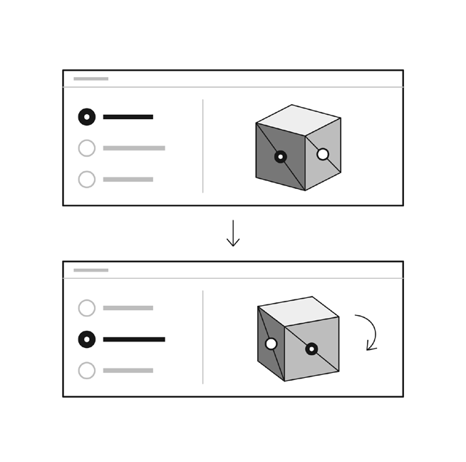
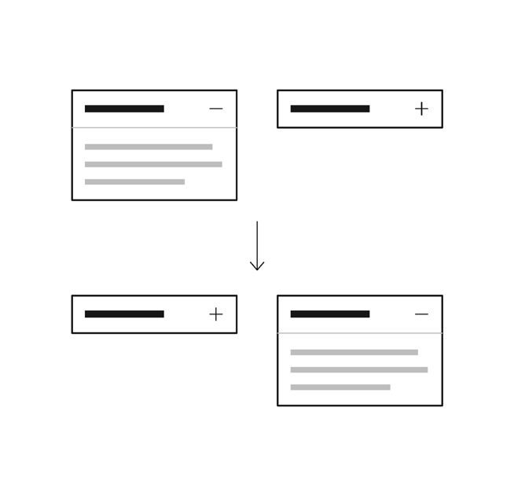
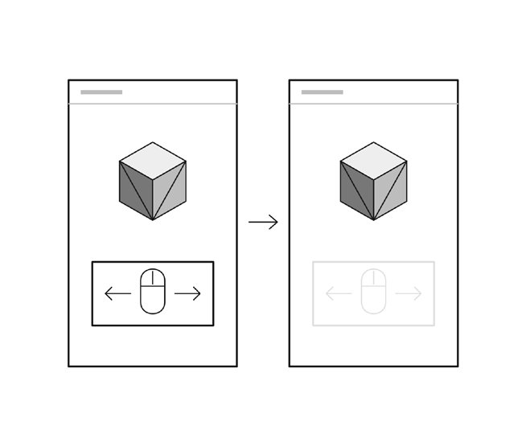

Index · 04
Index 웹 구현
사용 도구 · Codex · Three.js
Codex를 활용해 3D 모델의 관찰 기능을 웹에 구현했습니다. 관찰 부위가 바뀌는 과정과 측정 정보를 연결하고, 안내와 정보창이 유물을 가리지 않도록 화면의 동작을 조정했습니다. 아래 모델을 직접 회전·확대하며 두 석사자의 형태를 비교할 수 있습니다.
관찰 흐름을 잇는 동작
선택한 부위로 회전과 확대
관찰 항목을 바꿀 때 모델이 회전하며 해당 부위로 확대되도록 했습니다. 시점이 이동하는 과정을 따라가며 선택한 특징을 살펴볼 수 있습니다.

측정 정보와 모델을 함께 보기
부위를 선택하면 해당 측정 기록을 보여 주고, 한쪽 정보창을 열면 다른 창은 닫히도록 했습니다. 설명을 읽으면서도 3D 모델을 관찰할 공간을 확보했습니다.

안내 후 자유롭게 탐색하기
처음 진입했을 때 조작 안내를 2~3초간 표시한 뒤 사라지게 했습니다. 안내를 확인한 후에는 확대·축소 기능으로 다섯 관찰 항목 이외의 전체 형태와 세부도 살펴볼 수 있습니다.
